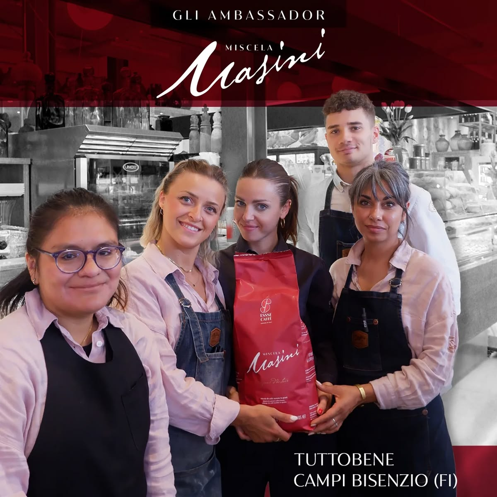
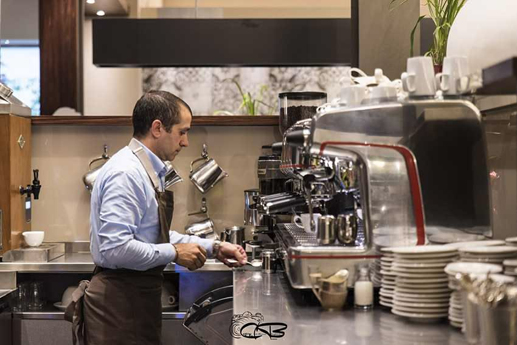
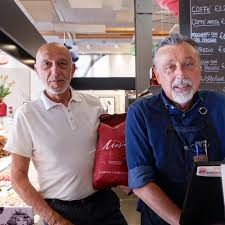
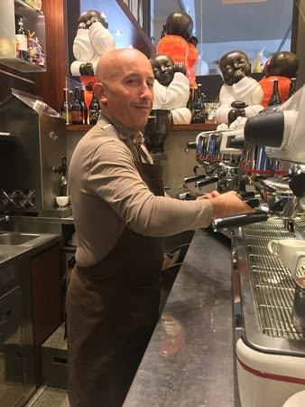

Scorri verso il basso e cammina con noi: dalla facciata ad arco della vecchia struttura industriale fino alla scalinata della galleria, passando per il bancone e la bottega. Cinque scorci, un unico respiro.



